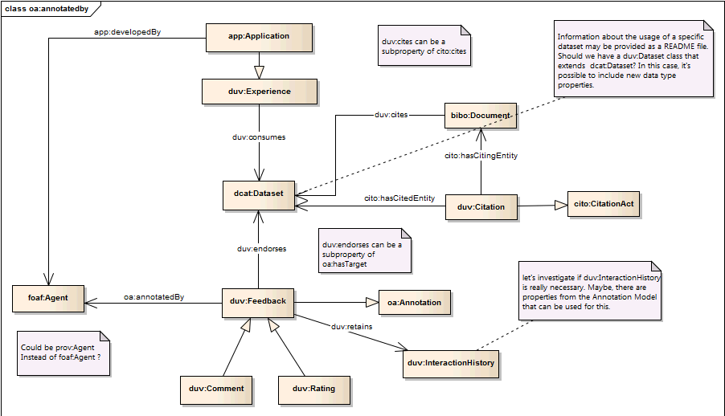

Abstract
The Dataset Usage Vocabulary (DUV) can illustrate how
datasets are used by humans and machines as well as describe consumer
feedback in the
form of user experiences and citation references. Datasets as defined
by
DCAT are a collection of data, published or curated by a single agent,
and available for access or download in one or more formats. From this
perspective a dataset is representative of a logical container used to
organize physical data.
By specifying a number of foundational concepts used to
collect dataset
consumer feedback and experiences, APIs can be written to support
collaboration across the web by structurally publishing consumer
opinions and experiences, and provide a means for data consumers and
producers advertise and search for published open dataset usage.
Status
of This Document
This is a draft document which may be merged into another
document or eventually make its way into being a standalone Working
Draft.
This document was published by the Data on the Web Best Practices
Working Group as an Editor's Draft. If you wish to make comments
regarding this document, please send them to public-dwbp-wg@w3.org
(subscribe, archives). All comments are welcome.
Publication as an Editor's Draft does not imply endorsement by the W3C
Membership. This is a draft document and may be updated, replaced or
obsoleted by other documents at any time. It is inappropriate to cite
this document as other than work in progress.
This document was produced by a group operating under the 5 February
2004 W3C Patent Policy. W3C maintains a public list of any patent
disclosures made in connection with the deliverables of the group; that
page also includes instructions for disclosing a patent. An individual
who has actual knowledge of a patent which the individual believes
contains Essential Claim(s) must disclose the information in accordance
with section 6 of the W3C Patent Policy.
This document is governed by the 1 August 2014 W3C Process Document.
Table of Contents
1. Introduction
This vocabulary is meant to fill a niche that helps
standardize the way web published dataset usage be conveyed and shared.
At this time
is no clear standard way to describe dataset usage on the Web. Without
a means to systematically describe dataset usage, searching and
conveying techniques are application specific and discovery and
collaboration across the Web is more difficult. This vocabulary also
recommends and requires data publishers to provide a mechanism of
receiving data usage from data consumers in the form of
feedback,citation and data correction.
2. Namespaces
The namespace for DCAT is http://www.w3.org/ns/dcat#.
However,
it should be noted that DCAT makes extensive use of terms from other
vocabularies,
in particular Dublin
Core. DCAT itself defines a minimal set of classes and
properties of its own. A full set of namespaces and prefixes used in
this
document is shown in the table below.
| Prefix |
Namespace |
| dcat |
http://www.w3.org/ns/dcat# |
| dct |
http://purl.org/dc/terms/ |
| dctype |
http://purl.org/dc/dcmitype/ |
| foaf |
http://xmlns.com/foaf/0.1/ |
| rdf |
http://www.w3.org/1999/02/22-rdf-syntax-ns# |
| rdfs |
http://www.w3.org/2000/01/rdf-schema# |
| skos |
http://www.w3.org/2004/02/skos/core# |
| vcard |
http://www.w3.org/2006/vcard/ns# |
| xsd |
http://www.w3.org/2001/XMLSchema# |
| duv |
http://www.w3.org/ns/duv# |
| oa |
http://www.w3.org/ns/oa# |
| rev |
http://purl.org/stuff/rev# |
| prov |
http://www.w3.org/ns/prov# |
| cito |
http://purl.org/spar/cito# |
| bibo |
http://purl.org/ontology/bibo# |
The DUV is intended for data producers and publishers
interested in tracking, sharing, and persisting consumer dataset usage.
It is also
intended for collaborators who require an exchange medium to advertise
and interactively convey dataset usage.
The scope of DUV is defined by the Data on the Web Best
Practices
(DWBP) Use Case document based on the data usage requirements about
datasets. These requirements include: citing data on the Web, tracking
the usage of data, sharing feedback and rating data. These requirements
were derived from fourteen real world use cases examples provided in
the
use case document.
R-Citable: It should be possible to cite data on the Web
Motivation: ASO, GS1Digital, LATimes, LusTRE, RDESC, SharePSI
(Share-PSI Emergency Albania) , UKOpenResearchForum
| Use Case |
R-Citable Benefits |
OpenExperimentalFieldStudies
|
Various
experiments and fields studies are performed to generate data which is
used in computational
models and bigger studies.Capability
to capture all the citations of the published data can justify the
efforts used in publishing. Citation information can be used to
identify all the user communities interested in data source.
|
LATimes
|
On
27 March 2014, the LA Times published a story Women
earn 83 cents for every $1 men earn in L.A. city government.
It was based on an Infographic released by LA's City Controller, Ron
Galperin. This report could only cite data portal of all the resource.
It could not cite to exact dataset because tool long URI. It
raises the question of granularity of dataset citation.
|
RDESC
|
RDESC
is a data curator so it uses data from different sources. But this
usage is not communicated to data publishers because of lack of such
mechanism provided by publishers.
|
R-TrackDataUsage
It
should be possible to track the usage of data. Capability
of tracking data usage can help enhancing reputation of the datasets.
Records of data usage shows all the successful outcome of the data
usage and all the entities associated with it such as the person,
organisation, application, research projects that has used these
datasets. It increases trust in the data. It also provides provence
about how data versions over the time.
Motivation:
ASO,
LandPortal,
LusTRE,
OpenExperimentalFieldStudies,
RDESC,
UKOpenResearchForum
| Use Case |
R-Citable Benefits |
ASO
|
Data
is used in decision making process by Water Reservoir Managers.
Capability to track usage of data will lead to identification of all
the decisions and policy changes made by authorities based on this
data. It will also list applications, tools and frameworks suitable for
analysis of this kind of data.
|
LandPortal
|
Data
is used in Research;
Policy Making, Journalism; Development;
Investments;
Governance; Food security; Poverty; Gender issues. Usage tracking will
help in assessing the impact of published data.
|
LusTRE
|
Data
is put in public for reuse and reference in nature conservation
activities. Information about use of this data will
determined impact of this framework. Usage of this data MUST lead to
future publications of less heterogenous data and more and more used of
standardised thesauri.
|
OpenExperimentalFieldStudies
|
Data
is used in computational models and studies. Capabilities to track
usage of data will enable data publishers to identify all the users
communities making use of this data. It will also identify combined use
of multiple datasets in one big study. This will identify related
datasets which can be recommended to future users.
|
RDESC
|
Data
is published in Linked Data Format for discovery and recommendations of
related datasets. Capability to keep track of its usage will list all
the tools and application suitable to be used with this data. Because
RDESC is not data publisher but more of a data facilitator, usage
tracking will identify highly search dataset and the trends in the
temporal, spatial and domain specific search queries.
|
UKOpenResearchForum
|
Data
is published with �intelligent
openness� to support research projects. Capability to track data usage
will provide adequate acknowledgement to data originator.
|
R-UsageFeedback
Data
consumers should have a way of sharing feedback and rating data.User
feedback is important to address data quality concerns about published
dataset. Different users may have different experience with the same
dataset so it is important to capture the context in which data was
used and the profile of the user who uses it. R-UsageFeedback should
also provide a way to communicate suggested corrections and update to
the datasets by the users back to data publisher. Data publishers
should have a review mechanism to incorporate submitted
corrections.
| Use Case |
R-Citable Benefits |
ASO
|
Data
grows rapidly each year. User feedback can reports issues of data
completeness and correctness.
|
DadosGovBr
|
Data
came from various publishers. As a catalog, the site has faced several
challenges, one of them was to integrate the various technologies and
formulas used by publishers to provide datasets in the portal. User
feedback can provided usabilities of those technologies and formulas.
User feedback can be used to crowdsource discrepancies in the
vocabularies used to describe datasets.
|
LusTRE
|
Data
multilingualism is one of the challenge for this use case. User
feedback can be used to crowdsource multilingual text alignment.
|
|
OpenExperimentalFieldStudies
|
Data
is used in computational models and studies. User feedback can be used
to identify good quality data required for good quality research.
completeness, time resolution and usability can be captured using user
feedback.
|
RDESC
|
RDESC
curate different data source and publish metadata in Linked Data
Format. User feedback is useful to assess metadata quality.
Availability of the source datasets, Correctness of persistent URI,
Correctness of the concepts defined in RDESC such as FOAF Agents,
Organizations, Physical Properties and Usability of the search
interface can be captured in user feedback.
|
|
|
7. Vocabulary Overview
This section is non-normative.

8. Vocabulary specification
8.1 Class: Agent
| RDF Class: |
duv:Agent |
| Definition: |
A person that developed an application or
providing feedback on a dataset. |
| rdfs:commnets: |
A person that developed an application or providing
feedback on a dataset. |
| rdfs:isDefinedBy |
http://www.w3.org/ns/duv |
| Sub Class Of |
foaf:Agent |
| Label |
Agent |
Property: develops
| RDF Property: |
duv:develops |
| Definition: |
Inverse relationship of developedBy.
associated with the development of an application |
| Range: |
duv:Application |
| rdfs:label |
develops |
| rdfs:isDefinedBy |
http://www.w3c.org/ns/duv |
8.2 Class: Annotation
| RDF Class: |
oa:Annotation |
| Definition: |
Information about a web resource or
associations between resources. |
| rdfs:commnets: |
Information about a web resource or associations
between resources. |
| rdfs:isDefinedBy |
http://www.w3.org/ns/oa |
| Label |
Annotation |
8.3 Class: Application
| RDF Class: |
duv:Application |
| Definition: |
TODO. |
| rdfs:commnets: |
TODO |
| rdfs:isDefinedBy |
TODO |
| Label |
Application |
Property: developedBy
| RDF Property: |
duv:developedBy |
| Definition: |
Agent associated with the development of an application |
| Range: |
foaf:Agent |
| rdfs:label |
developed by |
| rdfs:isDefinedBy |
http://www.w3c.org/ns/duv |
8.4 Class: Comment
| RDF Class: |
duv:Comment |
| Definition: |
A comment made in the dataset review. |
| rdfs:commnets: |
A comment made in the dataset review. |
| rdfs:isDefinedBy |
http://www.w3.org/ns/duv |
| Label |
Comment |
8.5 Class: Dataset
| RDF Class: |
dcat:Dataset |
| Definition: |
A collection of data, published or curated by
a single
source, and available for access or download in one or more
formats" |
| rdfs:commnets: |
A collection of data, published or curated by a single
source, and
available for access or download in one or more formats" |
| rdfs:isDefinedBy |
http://www.w3.org/ns/dcat |
| Label |
Dataset |
| rdfs:subClassOf |
dctype:Dataset |
8.6 Class: Document
| RDF Class: |
bibo:Document |
| Definition: |
A document (noun) is a bounded physical
representation of
body of information designed with the capacity (and usually intent) to
communicate. A document may manifest symbolic, diagrammatic or
sensory-representational information." |
| rdfs:commnets: |
A document (noun) is a bounded physical
representation of
body of information designed with the capacity (and usually intent) to
communicate. A document may manifest symbolic, diagrammatic or
sensory-representational information." |
| rdfs:isDefinedBy |
http://purl.org/ontology/bibo |
| Label |
Document |
Property: cites
| RDF Property: |
duv:cites |
| Definition: |
The citing entity cites the cited entity, either
directly and
explicitly (as in the reference list of a journal article), indirectly
(e.g. by citing a more recent paper by the same group on the same
topic), or implicitly (e.g. as in artistic quotations or parodies, or
in cases of plagiarism). |
| Range: |
dcat:Dataset |
| rdfs:label |
cites |
| rdfs:isDefinedBy |
http://www.w3c.org/ns/duv |
8.7 Class: Experience
| RDF Class: |
duv:Experience |
| Definition: |
Information or instructions related to the
usage of the dataset. |
| rdfs:commnets: |
Information or instructions related to the
usage of the dataset. |
| rdfs:isDefinedBy |
http://www.w3.org/ns/duv |
| Label |
Experience |
Property: consume
| RDF Property: |
duv:consumes |
| Definition: |
Usage experience associated with the dataset being
consumed." |
| Range: |
dcat:Dataset |
| rdfs:label |
consumes |
| rdfs:isDefinedBy |
http://www.w3c.org/ns/duv |
8.8 Class: Feedback
| RDF Class: |
duv:Feedback |
| Definition: |
Feedback on the review. Expresses whether the
review was useful or not. |
| rdfs:commnets: |
Feedback on the review. Expresses whether the review
was useful or not. |
| rdfs:isDefinedBy |
http://www.w3.org/ns/duv |
| Label |
Feedback |
| rdfs:subClassOf |
rev:Feedback |
Property: annotatedby
| RDF Property: |
oa:annotatedby |
| Definition: |
Feedback resource that identifies the agent responsible
for creating the Annotation." |
| Range: |
duv:Agent |
| rdfs:label |
annotatedBy |
Property: endores
| RDF Property: |
duv:endorses |
| Definition: |
Agent provided feedback providing endorsement of
dataset. |
| Range: |
dcat:Dataset |
| rdfs:label |
endores |
| rdfs:isDefinedBy |
http://www.w3c.org/ns/duv |
| rdfs:subPropertyOf |
oa.hasTarget |
Property: hasCitingEntity
| RDF Property: |
duv:hasCitingEntity |
| Definition: |
The citation act relates to the entity containing that
citation. |
| Range: |
dcat:Dataset |
| rdfs:label |
has citing entity |
| rdfs:isDefinedBy |
http://www.w3c.org/ns/duv |
| rdfs:subPropertyOf |
city:hasCitingEntity |
Property: retains
| RDF Property: |
duv:retains |
| Definition: |
The citation act relates to the entity containing that
citation. |
| Range: |
prov:Bunble |
| rdfs:label |
retains |
| rdfs:isDefinedBy |
http://www.w3c.org/ns/duv |
| rdfs:subPropertyOf |
city:hasCitingEntity |
8.9 Class: Rating
| RDF Class: |
duv:Rating |
| Definition: |
Metric used to evaluate the dataset.. |
| rdfs:commnets: |
Metric used to evaluate the dataset. |
| rdfs:isDefinedBy |
http://www.w3.org/ns/duv |
| Label |
Rating |
8.10
Class: Citation
8.11 Class: Feedback
A. Acknowledgements
B. Change
history
C. References
C.1 Normative
references